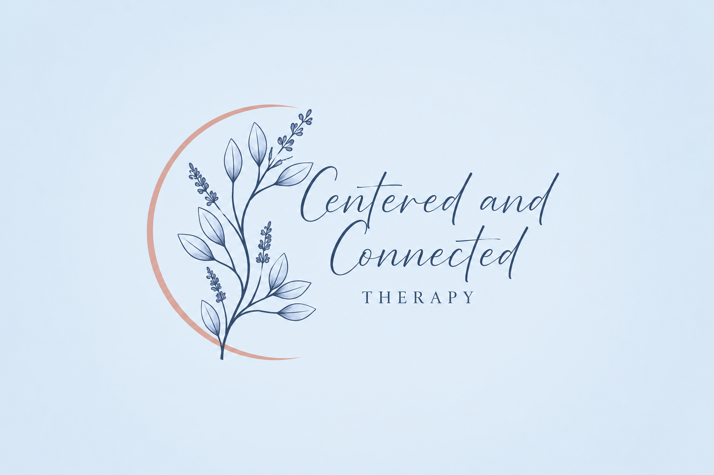

Relationship-focused therapy for individuals and couples in Virginia.
Contact MeStrong relationships help us feel connected, supported, and understood. Whether you're navigating relationship challenges, anxiety, perfectionism, burnout, or life transitions, therapy can help you build healthier relationships with yourself and others.
Move from conflict to connection.
Honor each partner's lived experience while strengthening your relationship.
Anxiety, perfectionism, self-esteem, burnout, and relationship concerns.